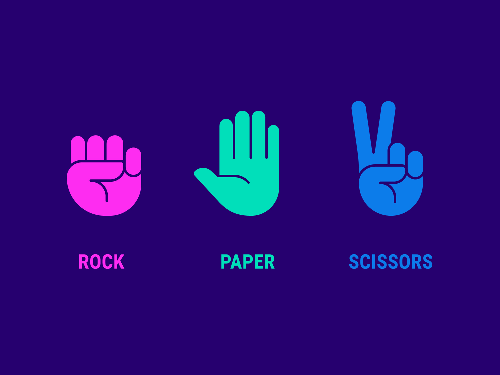

Development
Je programmeert en integreert proofs of concepts op basis van gevalideerde eisen en gedocumenteerd in een versiebeheertool.
Rock Paper Scissors

Opdracht
Aan het begin van dit semester heb ik als oefening een Rock paper scissors spel gemaakt om html,css en js beter onder de knie te krijgen.
Omdat ik nog 0 ervaring had met html, css en js heb ik mijn inspiratie grotendeels opgedaan uit een online youtube tutorial. https://www.youtube.com/watch?v=jaVNP3nIAv0&t=3897s.
het spel werkt als volgt: de bedoeling is om online steen papier schaar te spelen tegen de computer. Er wordt een scorebord bijgehouden hoevaak je hebt gewonnen en hoevaak de computer heeft gewonnen
Bekijk hier
Git versiebeheer
Om te bekijken hoe ik mijn POC's heb gemaakt en hoe ik mijn portfolio website heb opgezet. Klik dan op de onderstaande link
Git Merijn
Advanced Development
Opdracht
week 1:
Ga op bijv. Google en Github op zoek naar JavaScript libraries. Zoek daar er minimaal 10 van. Schrijf in eigen woorden kort (ongeveer 3/4 zinnen) op wat ze doen. En waar jij deze libraries voor zou kunnen gebruiken.week 2:
Kies 3 interessante libraries uit en maak hier een klein eigen voorbeeldje mee om te laten zien hoe de library werkt (vergeet dit niet meteen in Git te zetten). Vul je reeds aangemaakte en ingeleverde webpagina aan met demo's van je voorbeeldjes en een link naar je code in Git.week 3:
Gebruik 1 of meerdere van je gekozen libraries in een prototype voor je portfolio of de proftaak. Vul je webpagina weer aan met een voorbeeld en een link naar je Git.Advanced development
Javascript POC's
POC data verzamelen

Handig wanneer je data nodig hebt van een groot aantal personen
Bekijk hier
POC hover
Als je met je muis naar de cirkel beweegt wordt de cirkel groter
Bekijk hier
POC keybinds
In deze POC heb ik een object laten verplaatsen door gebruik te maken van de 4 pijlen op het toetsenbord. Bij elke verandering van richting veranderd het object ook van kleur.
Bekijk hier
Imageslideshow
2 foto's waarvan ze zichtbaar worden door middel van het faden van de andere foto